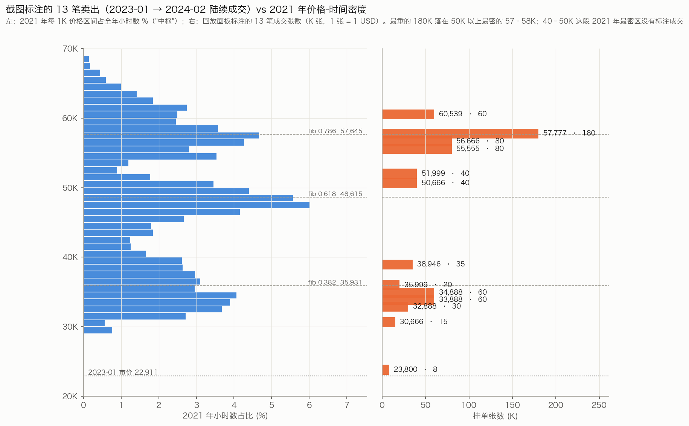
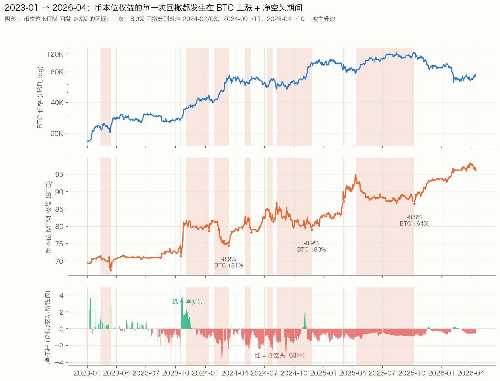
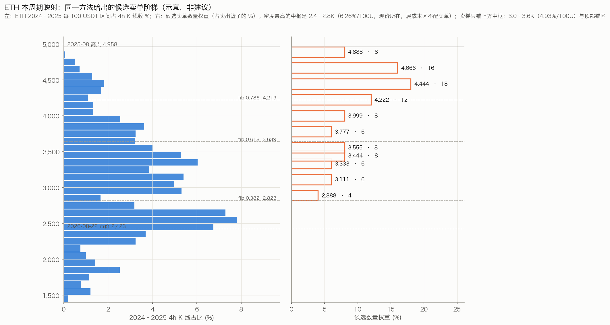
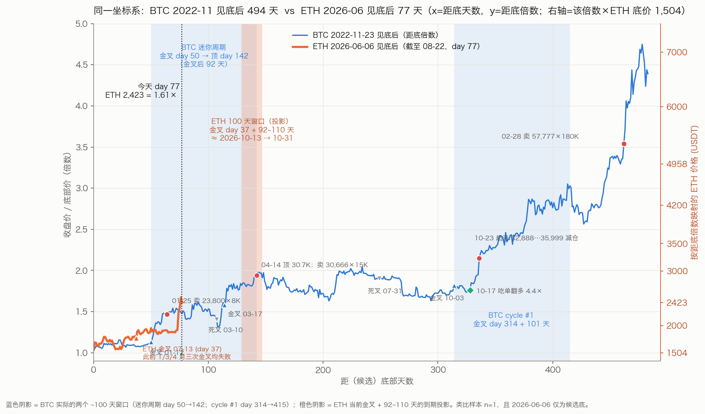

只看 Paul Wei（@coolish）的原始挂单、成交与钱包账本，不看任何策略代码。回答三个问题：他的卖单阶梯到底按什么几何提前铺的；2023 年起这轮牛市里，他的币本位为什么涨了又回撤、回撤从哪来；把这套打法搬到 ETH 币本位时，哪些错可以不再犯。
数据来自公开镜像仓库 btc_trading_since_2020：api-v1-order.csv（挂单生命周期，含撤单）、api-v1-execution-tradeHistory.csv（成交 / 资金费）、derived-equity-curve.csv（钱包与剔除出入金后的 adjustedWealthXBT），行情用 BitMEX XBTUSD 1h/1d。
从成交流水按反向合约口径（均价 = 1/价格加权）逐笔重建 XBTUSD 净仓位与未实现盈亏，得到币本位 MTM 权益 = adjustedWealthXBT + 未实现；期末净仓位 −1,298,000 张、均价 73,013.5，与 api-v1-position.snapshot.csv 的 −1,298,000 / 73,012.95 吻合。2023-08-01→2026-04-14 窗口 MTM 增量 +25.97 BTC，与钱包口径真值 +25.333 一致（差值即两端未实现）。
三个必须记住的口径限制
① transactTime 只在 2020–2023 年等于下单时间；2024 年起该字段等于最终成交/撤单时间（撤单寿命为 0 的比例 2023 年 27%、2024 年 97%）。所以"提前多久挂"只能在 2020–2023 段量化，2024 年以后只能看在哪个价位成交了多少。
② adjustedWealthXBT 把提走的 66 BTC 按币数加回，等于假设场外 BTC 一直是 BTC。因此"USD 本位回撤"只是在这个假设下的数字。
③ 本文把每日权益变化拆成 EOD 方向性（昨日净仓 × 今日价格变化）和 残差（日内换仓、阶梯价差、资金费、手续费）。残差含日内方向交易，不等同于严格的日内"纯价差"口径（那是 +4.365 BTC）。两者不冲突，只是切法不同。

30,666 / 32,888 / 33,888 / 34,888 / 35,999 / 50,666 / 51,999 / 55,555 / 56,666 / 57,777 这组价位在 2021、2022、2023、2024 四年反复出现（57,777 在 2021-03、04、05 和 2024-02、05、07、08、11 都挂过）。2021、2024、2025 三年限价单名义额分别有 33.7% / 38.6% / 34.1% 落在 …666/…888/…999/…555/…777 这类重复数字上；距市价 ≥10% 的远端阶梯里 93% 是这类价位。这是可执行、可验证的离散锚点集合，不是每天重算的指标值。
| 价位 | 张数 (K) | 2021 年 ±1.5% 内小时占比 | 最近斐波那契 | 偏差 | 成交日 |
|---|---|---|---|---|---|
| 23,800 | 8 | 0.0% | — | — | 2023-01-25 |
| 30,666 | 15 | 0.7% | 0.236 (28,084) | +9.2% | 2023-04-14 → 06-24 |
| 32,888 | 30 | 3.7% | 0.382 (35,931) | −8.5% | 2023-10-23 |
| 33,888 | 60 | 4.5% | 0.382 | −5.7% | 2023-10-23 |
| 34,888 | 60 | 3.5% | 0.382 | −2.9% | 2023-10-23 |
| 35,999 | 20 | 3.6% | 0.382 | +0.2% | 2023-11-02 |
| 38,946 | 35 | 3.0% | 0.382 | +8.4% | 2023-12-01 |
| 50,666 | 40 | 4.5% | 0.618 (48,615) | +4.2% | 2024-02-14 |
| 51,999 | 40 | 2.1% | 0.705 (53,291) | −2.4% | 2024-02-14 |
| 55,555 | 80 | 5.4% | 0.786 (57,645) | −3.6% | 2024-02-27 |
| 56,666 | 80 | 7.4% | 0.786 | −1.7% | 2024-02-27 |
| 57,777 | 180 | 7.4% | 0.786 | +0.2% | 2024-02-28 |
| 60,539 | 60 | 4.6% | 0.886 (63,019) | −3.9% | 2024-02-28 |
均匀撒点的基线密度是 3.3%；他 13 档里 9 档高于基线，最重的三档是 5.4–7.4%。斐波那契只有 35,999（0.382）和 57,777（0.786）两处精确命中，其余偏 2–9%，更像重复数字落在中枢带里时顺便撞上了斐波那契。中枢密度配重是主逻辑，斐波那契至多是次要校核。
| 距市价 | 买单成交率 | 卖单成交率 | 买单撤单中位寿命 (h) | 卖单撤单中位寿命 (h) |
|---|---|---|---|---|
| 0–1% | 82% | 81% | 0.3 | 0.1 |
| 1–3% | 70% | 69% | 2.1 | 0.9 |
| 3–6% | 49% | 53% | 10 | 5 |
| 6–10% | 31% | 25% | 31 | 12 |
| 10–20% | 13% | 11% | 41 | 80 |
| 20–40% | 3% | 0% | 51 | 120 |
| 月份 | 成交卖单数 | 成交张数 (万) | 成交价相对月初 p10 / p50 / p90 | 撤单数 | 撤单价相对月初 p50 |
|---|---|---|---|---|---|
| 2023-10 | 110 | 302 | +0.8% / +5.9% / +28% | 12 | +5.3% |
| 2023-11 | 145 | 295 | +1.1% / +7.0% / +9.5% | 23 | +8.3% |
| 2023-12 | 147 | 392 | +2.7% / +13% / +16% | 8 | +13% |
| 2024-01 | 102 | 193 | −0.7% / +2.6% / +11% | 12 | +6.8% |
| 2024-02 | 150 | 762 | 0.0% / +20% / +45% | 36 | +22% |
| 2024-03 | 124 | 699 | −0.4% / +8.8% / +14% | 6 | +12% |
卖单带每个月都跟着市价上移，中位在月初价之上 3–20%，被撤的单也在同一条带里——这就是"提前挂"的真实形态：领先市价一到两个中枢，不是领先一个周期。而数量之所以"到时候刚好合适"，是因为它根本不是一年前定的：每次重挂时按当时的钱包和总币数定，而他的币本位财富在价格翻 2.4 倍的 13 个月里只从 70.8 变到 74.6 BTC——按币数比例定的量天然跨周期稳定。反向合约还有一个机械效应：对冲同样多的 BTC，价格越高需要的张数越多，金字塔有一半是这么来的。
2024–2025 牛市里他同样维持着远端卖单：2024-05-01 撤掉 74.6–85.1K（12 档、170 万张）、2025-03-01 撤掉 92–124K（23 档、361 万张）、2025-11-14 撤掉 126.7–149.8K（10 档、244 万张）——每次都是局部顶确认、价格回落后整批撤掉，换一套新锚点。这和 2021-04-16 撤 67.8–74.9K（29 档）、2021-12-07 撤 53.4–59.7K 是同一个动作。

| 峰 | 谷 | 深度 | 损失 (BTC) | BTC 价格变动 | 均净杠杆 (钱包) | 均净杠杆 (总财富) | 方向性 | 执行残差 | 收复天数 |
|---|---|---|---|---|---|---|---|---|---|
| 2023-02-10 | 2023-03-14 | −5.9% | −4.21 | −3% | +0.90 | +0.05 | −0.73 | −3.35 | 38 |
| 2023-11-03 | 2024-01-12 | −3.5% | −2.85 | +32% | −0.14 | −0.03 | −2.62 | +0.31 | 15 |
| 2024-01-27 | 2024-03-13 | −8.9% | −7.26 | +81% | −1.53 | −0.23 | −8.22 | +1.01 | 51 |
| 2024-05-03 | 2024-05-22 | −5.4% | −4.51 | +23% | −1.81 | −0.34 | −4.81 | +1.47 | 37 |
| 2024-07-09 | 2024-07-29 | −4.2% | −3.56 | +22% | −1.62 | −0.35 | −4.56 | +1.48 | 9 |
| 2024-08-09 | 2024-11-24 | −8.9% | −7.73 | +80% | −0.92 | −0.19 | −8.95 | +1.79 | 98 |
| 2025-03-02 | 2025-03-04 | −3.2% | −2.88 | +12% | −1.46 | −0.35 | −3.29 | +3.88 | 6 |
| 2025-04-10 | 2025-10-08 | −8.8% | −8.38 | +64% | −0.74 | −0.20 | −9.62 | +2.15 | 115 |
除 2023 年初那次（熊市末尾杠杆多头被震）以外，七次回撤全部是"BTC 上涨 + 净空头"；执行残差在这七次里全部为正，只是盖不住方向性亏损。每次回撤的收复都靠 BTC 随后下跌——2025-04→10 丢的 8.4 BTC，是 2025-10→2026-02 BTC 从 124.7K 跌到 62.8K 时才赚回来的。
| 阶段（2023-10 → 2026-04） | 方向性 (BTC) | 执行残差 (BTC) | 均净杠杆 (钱包) |
|---|---|---|---|
| 日线 EMA15 > EMA30（58% 的天数） | −15.18 | +25.18 | −0.66 |
| 日线 EMA15 < EMA30（42%） | −9.37 | +22.81 | −0.81 |
| 资金费（净空头收正费率） | +2.47 | ||
| 手续费（2023–24 年 taker 占比 61%） | −2.64 |
方向性在上行段亏、在下行段也亏（下行段里的 V 形反弹打在空头上），执行残差在两种环境下都稳定为正。最赚的月份是三类：周期启动月的杠杆多头（2023-10：+8.19，方向 +5.90）、下跌月的空头（2025-02/03：+9.34；2025-11：+3.48）、高波动横盘月的阶梯（2024-03：残差 +5.88；2024-11：+5.74；2025-03：+6.61）。
| 变体（只缩放方向性分量，执行残差保留） | 期末权益 (BTC) | 区间收益 (BTC) | 最大回撤 |
|---|---|---|---|
| 实际 | 95.83 | +23.43 | −8.9% |
| 净空头上限 1.0× 钱包 | 105.76 | +33.37 | −8.4% |
| 净空头上限 0.5× 钱包，仅在 EMA 多头段 | 107.79 | +35.40 | −7.8% |
| EMA 多头段不持净空头 | 110.71 | +38.31 | −7.2% |
| 净空头上限 0.5× 钱包（全程） | 117.24 | +44.84 | −6.2% |
| EOD 净仓位归零，只保留执行 | 120.38 | +47.99 | −4.3% |
这是上界估计（缩小库存会改变阶梯成交，残差不会原样保留），但方向明确：币本位目标下，牛市里的常驻净空头是回撤的唯一来源，也是收益的最大漏斗。它的全部价值只在周期顶之后兑现——而即使在那时，因为袖口只占总财富 20%，USD 本位回撤仍达 −44%（2025-10-08 → 2026-02-07）。对冲没有保住 USD，却在牛市里持续付了币。
位置对照。ETH：2025-08-24 高点 4,958 → 2026-06-06 低点 1,504（−70%）→ 2026-08-22 收盘 2,423（反弹 +61%，距高点 2.05×）。BTC 截图时刻（2023-01-26，截图 K 线 O 22,910.5 / C 22,629.5 与日线吻合）：2021-11 高点 69,146 → 2022-11 低点 15,400（−78%）→ 22,911（反弹 +49%，距高点 3.0×）。ETH 现在几乎就是那张截图的时刻，区别是 ETH 已经反弹得更多、离上轮高点更近，所以阶梯的第一档要比 BTC 当年的 30,666（+34%）更近。 还要记住他在这个阶段没有囤币（见 §07）：币是靠换手和突破那一下赚的。

| 价位 | 距现价 | 占 2025 高点 | 上轮密度 (±1.5%) | 权重 | 角色 |
|---|---|---|---|---|---|
| 2,888 | +19% | 58% | 低 | 4% | 第一档，相当于 BTC 的 23,800：试探，不指望成交量 |
| 3,111 / 3,333 / 3,444 / 3,555 | +28% → +47% | 63–72% | 高（中枢） | 6 / 6 / 8 / 8 | 本轮中枢带，相当于 BTC 的 32,888–35,999 簇（步长 3–7%） |
| 3,777 / 3,999 | +56% / +65% | 76% / 81% | 中 | 6 / 8 | 2025-07→10 的肩部，相当于 BTC 的 50,666 / 51,999 |
| 4,222 / 4,444 / 4,666 | +74% → +93% | 85–94% | 低–中 | 12 / 18 / 16 | 顶部区，相当于 BTC 的 55,555 / 56,666 / 57,777；最重一档放在 4,444（上轮顶部区成交时间相对最多的 4,400–4,600） |
| 4,888 | +102% | 99% | 极低 | 8 | 相当于 BTC 的 60,539，封顶递减 |
对应的斐波那契（1,504→4,958）：0.382 = 2,823、0.618 = 3,639、0.786 = 4,219——3,555 和 4,222 恰好贴着 0.618 / 0.786，和 BTC 那次一样是顺带命中。名义总量按他当年的比例取：卖单篮子 ≈ 袖口的 3×（币本位名义），但 ≤ 总持币的 0.2×；袖口本身 ≤ 总持币 20%。
把 2023-01 起的 1,203 天按周期阶段切成四段（cycle-IN 用四个已验证金叉日 2023-10-02 / 2024-02-05 / 2024-09-20 / 2025-04-22 各 + 101 天），每段的活动强度、库存方向、挂单带位置如下。2024 年以后"距市价"只对被撤的单有意义（它记录的是刷新时未成交档位的位置），成交单的距离在成交时刻天然接近零，表里不列。
| 参数 | P0 底部震荡 2023-01→10-13 | P1 cycle-IN 4 段 × 101 天 | P2 cycle-OUT 其余 | P3 顶后下跌 2025-10→2026-02 |
|---|---|---|---|---|
| 天数 / 平均钱包 (BTC) | 286 / 5.0 | 392 / 16.1 | 402 / 20.9 | 123 / 26.2 |
| 净杠杆（钱包口径）均值 [p10, p90] | +0.02 [−0.98, +0.78] | −0.60 [−1.62, +0.42] | −0.93 [−1.64, −0.30] | −0.42 [−0.81, +0.01] |
| 被撤卖单距市价 p50 / p90 | +3.3% / +17% | +1.3% / +6.7% | +2.5% / +25% | +25% / +47% |
| 被撤买单距市价 p50 / p90 | −2.6% / +1.4% | −7.6% / −0.1% | −0.3% / +0.8% | −2.2% / −0.6% |
| 每日成交单数 / 撤单数 | 3.6 / 1.6 | 5.2 / 1.6 | 2.9 / 0.4 | 2.4 / 0.4 |
| 单档成交量中位（占钱包，币本位） | 13% | 3.6% | 3.0% | 1.2% |
| 月换手（双边成交 / 钱包） | 35× | 11× | 5.1× | 1.4× |
| 批次结构（档数中位 / 档间步长） | 5 档 / 0.13–0.22% | 4 档 / 0.20–0.28% | 3–4 档 / 0.29–0.47% | 3 档 / 0.52–0.70% |
| maker 占比 | 36% | 37% | 36% | 90% |
| 阶段币本位增量 (BTC) | +4.7 | +13.1 | +16.9 | +9.0 |
三条读法：① P0 不是囤币期。净杠杆均值 0.02，钱包 5 BTC 以 35× 月换手做 ±3% 的高频阶梯，9.5 个月只多出 4.7 BTC（其中一部分还是 10 月初的空头收益）。② 活动强度随周期单调下降：换手 35× → 11× → 5× → 1.4×，单档 13% → 1.2%，钱包越大越克制。③ 即便在 cycle-IN，他的平均库存也是净空（−0.60）——多头只在四段里的第一段（2023-10）的前十天出现过。
| 时刻 (UTC) | 买 (张) | 卖 (张) | VWAP | 吃单比例 | 发生了什么 |
|---|---|---|---|---|---|
| 10-16 05:00–12:00 | 0 | 55,000 | 27,3xx–27,8xx | — | 三个月区间顶部（28.5K）之下继续铺空，EOD 前一日已 −1.27× |
| 10-16 13:00 | 642,000 | 30,000 | 28,485 | 74% | 假 ETF 获批消息冲到 30.5K 的那一小时，吃单追多 |
| 10-16 14:00–19:00 | 0 | 900,000 | 27,937 → 28,706 | 22–100% | 消息证伪回落，追进去的多头反手卖掉并加空，EOD −49 万张（−2.46×） |
| 10-17 07:00–14:00 | 300,000 | 480,000 | 28,2xx–28,5xx | — | 价格在 28.2–28.6K 站稳一整天，空头还在 |
| 10-17 16:00–18:00 | 1,460,400 | 0 | 28,467–28,576 | 64–91% | 日线在区间顶上方收住后，两小时内吃单翻到 +79 万张（4.37× 钱包 / 0.39× 总币数） |
| 10-18 → 10-26 | 沿 32,888 / 33,888 / 34,888 / 35,999 减仓 | 杠杆 4.4× → 1.3×，钱包 6.7 → 12.2 BTC，权益 71.4 → 81.7 BTC（+10.3，17 天） | |||
这是整个 2023–2026 唯一一次他主动用杠杆多头，并且是用吃单完成的——他全程 36% 的 maker 占比里，这一天是有意为之的例外。付出的学费也在账上：10-16 追涨再反手的那一轮，加上 10-17 翻仓前扛的空头，让权益从 74.6 先跌到 71.4（−3.2 BTC）再起飞。

对齐的锚不是价格是结构：BTC 候选底 2022-11-23，ETH 候选底 2026-06-06（与 BTC 侧周期监控给出的候选底同日）。两边都是：熊市里几次金叉全部失败（BTC 2022 年多次；ETH 2026 年 1/3/4 月三次）→ 见底后第一个金叉才走出迷你周期（BTC day 50，ETH day 37）。今天 ETH 在 day 77、金叉后 40 天、1.61×——BTC 同日龄是 1.48×（22,756），ETH 比类比剧本热 8%，金叉也早 13 天，所以到期窗口宁可从金叉起算（10-13 → 10-31），距底 142 天（10-26）落在同一窗口内。
| BTC 事件（2023） | BTC 价 | 距底倍数 | ETH 映射价 | 对照 / 动作含义 |
|---|---|---|---|---|
| 候选底（day 0） | 15,400 | 1.00 | 1,504 | 已发生（2026-06-06） |
| 首个有效金叉（day 50） | 17,443 | 1.13 | 1,704 | ETH 实际金叉 day 37 @ 2,059（1.37×）——更早更高 |
| 01-25 小卖 23,800×8K（day 63） | 23,800 | 1.55 | 2,325 | 已越过：ETH 现价 2,423 = 1.61× |
| 今天同日龄（day 77 = 2023-02-08） | 22,756 | 1.48 | 2,223 | ETH 实际 2,423，偏热 +8% |
| 迷你周期顶（day 142 = 04-14，卖 30,666×15K） | 29,903 | 1.94 | 2,921 | 词汇表 2,888 第一档的位置；到期窗口 10-13→10-31 内小卖 ≈ 袖口 10% |
| 夏季箱体（day 142→313） | 25,109–31,470 | 1.63–2.04 | 2,453–3,074 | 预期 2026-11 → 2027-03 的换手区；净杠杆 0 |
| 突破站稳区（day 328，10-17 吃单翻多 4.4×） | ≈28,500 | 1.85 | 2,784 | 下一轮 cycle 触发的量级参考；只按信号不按价 |
| 首减仓簇 32,888–35,999（day 334–346） | — | 2.14–2.34 | 3,213–3,517 | 与 §06 词汇表 3,111–3,555 簇吻合 |
| 主升浪顶部簇 55,555–60,539（day 462+） | — | 3.61–3.93 | 5,427–5,914 | ⚠ 倍数口径高于 ETH 前高 4,958。ETH 熊更浅（−70% vs −78%），顶部锚点应沿用他的做法按上一轮中枢定（§06 的 4,222–4,888 簇），倍数映射只作上界参考 |
类比样本 n=1；"100 天"是 BTC 上一轮的经验（金叉→顶 92 天；cycle-IN 84/84/110/87 天），ETH 未独立验证；映射价只是先验，操作触发一律以 ETH 自身结构（金叉、箱体顶、EMA30）为准。
2023 年 1–4 月正是 ETH 当前所处的"金叉后迷你周期"段。这四个月他的币本位只赚了 +1.65 BTC（1 月 +1.64、2 月 −1.20、3 月 +0.97、4 月 +0.24），而账本里可辨认的三类错误合计约 −7 BTC、手续费 −0.59——错误的代价是同期净收益的 4 倍。逐笔看：
| 错误 | 代价 | 账本细节 |
|---|---|---|
| M1 事件夜杠杆抄底，恐慌价砍在最低点 | −3.42 BTC （单日，钱包 5.2→1.9） | USDC 脱锚夜 03-09 18:00–20:00 限价买 62 万张 @ 21,0xx–20,7xx，杠杆推到 6.64×（钱包仅 3 BTC）；20:55 起改用市价连环砍（169 笔市价卖，20,342 → 19,867，含终端"Position Close"一键平仓；非强平，数据无 Liquidation 行）。六天后 BTC +36%。同类尖峰还有 01-09 的 3.7×、01-27 的 10.42×（112 万张 @ 23K，侥幸未出事）、02-12 的 6.4×（2 月回撤起点）。 |
| M2 割肉后 V 型反转里追单 | −2.73 BTC （两天） | 03-14（+7.6% 大阳）从 flat 起日内追到 5.3× 又缩回，当日 −1.48；03-17 再追到 3.3×，当日 −1.25。两天都是"当天从零开始的吃单方向仓"。 |
| M3 恐慌夜撤掉整条卖单带 | 整条带踏空 （规模缩至 19%） | 02-16 挂好的 25,666→29,999 九档 31 万张卖带，03-09/10 恐慌中全部撤销。此后价格在 03-16 → 04-13 逐档穿过全部九档（25,666/26,333 于 03-16，29,999 于 04-13）；重挂时只剩 15K @ 30,666 = 原 80K 的 19%。撤单的那晚正是这条带即将开始工作的前夜。 |
| M4 吃单换手烧费 | −0.59 BTC （1–4 月） | 1 月 0.203、3 月 0.206 BTC，单月最高 ≈ 袖口的 4%；maker 占比仅 29–54%。M1/M2 的砍仓与追单几乎全是市价单。P0 全段手续费 0.98 BTC = 阶段收益 6.55 的 15%。 |
对照组——同一窗口他做对的三件事，保留不动：01-25 第一档小卖 23,800×8K；03-11→13 割完后三天保持 flat，没有反手追空；04-12 在 +2% 处重挂 30,666 并于 04-14 顶部当天成交。
合并后的优先级：O1 杠杆硬顶 > O3 熔断 > O4 带子冻结 > O2 撤退线 > O5 费用。前三条针对的是他 1–4 月全部三笔大亏的共同结构：事件冲击 → 杠杆放大 → 恐慌反应（砍仓/撤带）→ V 型反转打脸。规则的本质是把"恐慌时刻允许做的动作"收缩到只剩一个：降杠杆。
前面几节的一处口径修正。BitMEX 是单向持仓：同一批卖单先把多单减到零，继续成交就自然变成净空。所以"净空 −0.4×"在效力上等于把 40% 的现货敞口对冲掉，净美元敞口 = 1 − h，而不是一笔方向性空单。§04/§05 把牛市里的净空称作"成本"在币本位账上没错（涨的时候它确实让币变少），但把它读成"做空"是窄了——它是用合约把一部分现货换成锁定的美元价值，也就是他"高卖低买、币越滚越多"的那条腿。
用对冲比例 h = −合约名义 ÷ 总币市值 重新看他 2023-01 → 2026-04 的全部 1,203 天，规律非常整齐：h 不是常数，是"价格离上一轮高点多远"的函数。
| 价格 / 上轮高点 | 天数 | 对冲比例 h 中位 | h 的 p75 | 净美元敞口 1−h | 映射到 ETH（前高 4,958） |
|---|---|---|---|---|---|
| < 35% | 68 | −0.02 | 0.00 | 1.02 | < 1,735 |
| 35–50% | 237 | 0.00 | 0.05 | 1.00 | 1,735–2,479 ← ETH 现价 2,460 = 49.6% |
| 50–65% | 95 | 0.11 | 0.17 | 0.89 | 2,479–3,223 |
| 65–80% | 29 | 0.23 | 0.32 | 0.77 | 3,223–3,966（对冲最重的区） |
| 80–100% | 252 | 0.19 | 0.32 | 0.81 | 3,966–4,958 |
| > 100% | 522 | 0.15–0.18 | 0.24 | 0.83 | > 4,958 |
两个关键事实：① 他从来没有把自己对冲成净空——h 中位始终在 0.1–0.25，最高只到 0.5–0.59 且极短暂，净美元敞口永远是正的。② 价格低于上轮高点一半时，他的 h 基本是 0。ETH 现价 2,460 = 前高的 49.6%，正好卡在这条线上——所以"现在就换成现货 + 0.4 空"在他的排程里提前了整整一档区间。
§06 那张卖单梯子，换算成对冲比例后与他的实测排程几乎重合（篮子取总币的 40–50%）：
| ETH 价位 | 占前高 | 本档权重 | 累计篮子 | 对冲比例 h （篮子 = 45% 总币） | 他在该区的实测 h |
|---|---|---|---|---|---|
| 2,888 | 58% | 4% | 4% | 0.02 | 0.11（50–65% 区） |
| 3,111 | 63% | 6% | 10% | 0.05 | |
| 3,333 / 3,444 / 3,555 | 67–72% | 6/8/8% | 32% | 0.14 | 0.23（65–80% 区） |
| 3,777 | 76% | 6% | 38% | 0.17 | |
| 3,999 | 81% | 8% | 46% | 0.21 | 0.19（80–100% 区） |
| 4,222 | 85% | 12% | 58% | 0.26 | |
| 4,444 | 90% | 18% | 76% | 0.34 | |
| 4,666 / 4,888 | 94–99% | 16/8% | 100% | 0.45（上限） |
假设总币 100 ETH、现价 2,460。A = 完全不对冲；B = 现在就上 0.4 对冲；C = 按梯子逐档加对冲（篮子 45%）。
| ETH 价格 | 涨跌 | A 币数 / 美元(K) | B 币数 / 美元(K) | C 币数 / 美元(K) | C 此时的对冲比例 |
|---|---|---|---|---|---|
| 1,800 | −27% | 100.0 / 180 | 114.7 / 206 | 100.0 / 180 | 0%（一档没成交） |
| 2,100 | −15% | 100.0 / 210 | 106.9 / 224 | 100.0 / 210 | 0% |
| 2,888 | +17% | 100.0 / 289 | 94.1 / 272 | 100.0 / 289 | 2% |
| 3,555 | +45% | 100.0 / 356 | 87.7 / 312 | 99.0 / 352 | 14% |
| 3,999 | +63% | 100.0 / 400 | 84.6 / 338 | 97.4 / 390 | 21% |
| 4,444 | +81% | 100.0 / 444 | 82.1 / 365 | 95.3 / 424 | 34% |
| 4,958 | +102% | 100.0 / 496 | 79.8 / 396 | 91.8 / 455 | 45%（满仓对冲） |
猛涨到 +81% 时：梯子对冲只比完全不对冲少 4.5% 的美元（424 vs 444），而现在就上 0.4 对冲要少 18%（365 vs 444）——差距 59K，等于 24 个 ETH。反过来跌到 −27% 时，0.4 对冲能让币数从 100 变成 114.7——对冲本身没有错，错的是在价格只走到前高一半时就把它加满。梯子的意义就是让 h 随价格自动爬升：涨得越猛，对冲加得越快，而净敞口 1−h 全程为正，所以猛涨你一直在赚，只是赚得递减；这正是设计目的，不是需要抢救的意外。
| 时点 | 总币 | 袖口 | 袖口占比 | 对冲比例 h | 袖口空头杠杆 |
|---|---|---|---|---|---|
| 2023-01-20（P0） | 70.5 | 4.4 | 6% | +0.01 | 0.18 |
| 2023-10-23（突破后） | 74.9 | 8.9 | 12% | −0.32（净多） | — |
| 2024-06-30 | 81.5 | 15.5 | 19% | +0.27 | 1.41 |
| 2025-01-02 | 82.8 | 16.8 | 20% | +0.12 | 0.58 |
| 2026-04-14 | 96.4 | 30.4 | 32% | +0.19 | 0.60 |
他的袖口从总币的 6% 一路喂到 32%，就是为了支撑越来越大的对冲——h 每加 0.1，袖口就得跟着补，否则袖口层面的空头杠杆会失控。他全程把袖口空头杠杆压在 1× 左右（最高 2.9×）。对 ETH 的含义：想在 3,999 做到 h=0.21，袖口至少要是总币的 20%，否则袖口杠杆会超过 1×；加对冲之前先加袖口，顺序不能反。
两条硬上限：h ≤ 0.45（净美元敞口永不低于 0.55×，他实测中位 0.1–0.25、极值 0.5）；袖口空头杠杆 ≤ 2×（反向合约的空头在价格上涨时亏币且亏损加速，这条比 h 更致命）。
这四个月的下单时间戳是可信的（失真从 2024 年开始），所以能逐笔还原。1,154 笔委托：限价 986 笔（85%）、市价 164 笔（14%）、止损 4 笔。下面全部基于这 986 笔限价单。
更正一：他不是每天挂单，120 天里有 53 天一笔没挂。挂单与否由波动率决定——日振幅 <3% 的天数只有 41% 会挂单（中位 0 笔）；振幅 >4% 的天数 68% 会挂，中位 4–6 笔、中位 8.4 万张。前文"每天维持梳子"的说法不成立，正确的说法是波动来了才铺网，没波动就空仓等着。
更正二："数量随距离递增"只适用于远端，近端网格是等量的。前文那个"80% 批次数量与距离正相关"是 30 分钟聚合窗口造成的伪影——它把同一天的多个近端网格并成一个假的宽批次。用 5 分钟窗口重切后，近端网格 76% 是等量单，末档/首档中位 1.0 倍；金字塔只出现在跨度 >2% 的远端批次里。
| 特征 | I 近端密网（80 批，69%） | II 远端金字塔（36 批，31%） |
|---|---|---|
| 档数中位 | 5 | 8 |
| 档距中位 | 0.11% | 0.73% |
| 整批跨度 | 0.55% | 4.2%（>5% 的极端批到 13.5%） |
| 最近档 / 最远档 距市价 | 0.67% / 0.95% | 2.3% / 7.6% |
| 规模形态 | 等量（76% 批次）末/首 = 1.0× | 金字塔 末/首 = 3.4×（远端批 8×） |
| 单档规模 | 中位 0.22 × 袖口市值（2 万张 / 袖口约 11 万美元），p75 = 0.48× | |
| 整批规模 | 1.12 × 袖口 | 1.93 × 袖口 |
| 成交率 / 撤单率 | 75% / 25% | 39% / 61%（远端批 15% / 85%） |
| 寿命中位 | 17 分钟 | 34 小时 |
| 角色 | 赚钱的引擎 | 埋伏，多数被撤掉 |
33% 的限价单在 1 分钟内成交，49% 在 10 分钟内，68% 在 1 小时内，只有 10% 挂过 24 小时（按张数加权：64% 在 10 分钟内成交）。这不是"挂着等"的被动做市，是贴着盘口打，成交完立刻再铺一层。买单中位挂在市价下方 1.36%，卖单中位挂在上方 0.63%——卖比买更贴身，因为他多数时间在减手上的多头。
2023-04-11（平静日，12 笔）——全天只有两批买单，其余时间不动：
| 时间 | 价位 | 张数 | 档距 | 结果 |
|---|---|---|---|---|
| 19:11 | 30,236.5 / 30,174 / 30,124 / 30,099 / 30,074 | 各 5,000 | 0.04–0.2% | 5 档全成交（0 秒 ~ 49 分） |
| 20:26 | 30,015.5 / 30,003 / 29,990.5 / 29,978 / 29,965.5 / 29,953 | 各 5,000 | 各 12.5 点 = 0.042% | 6 档全成交（5.8 小时内） |
第二批是一个完全等距、完全等量的 6 档网格，总跨度只有 0.21%。这就是近端密网的标准形态。
2023-02-13（中等日，19 笔）——出现了两条金字塔，且都是反向递增：
| 时间 | 形态 | 结果 |
|---|---|---|
| 12:31 | 卖单 21,750.5(2.5万) → 21,767(4.5万) → 21,783.5(2.5万) → 21,821(2.5万) → 21,845(4.5万) → 21,872(8.5万) → 21,892.5(8.5万)，越高挂越多 | 7 档全部撤销（挂了 5.5 小时） |
| 18:31 | 买单 21,604(2万) → 21,579(4万) → 21,541.5(8万) → 21,516.5(16万) → 21,491.5(16万)，越低挂越多，逐档翻倍 | 前 2 档成交，后 3 档撤销（8.9 小时） |
| 指标（1–4 月 120 天） | 数值 |
|---|---|
| 收盘完全空仓（仓位 = 0） | 36 天（30%） |
| 收盘 |袖口杠杆| < 0.2 | 57 天（48%） |
| 收盘 |袖口杠杆| < 0.5 | 85 天（71%） |
| 收盘 |袖口杠杆| > 2 | 14 天（12%） |
| 袖口杠杆中位 / 均值 | 0.00 / 0.49 |
| 总成交 ÷ 净仓位变动 | 3.1 倍（日内单日中位 1.4 倍） |
他在这个阶段基本是日内往返、收盘回平。所谓"底部段的仓位倾斜"其实是少数几天的杠杆尖峰（12% 的天数 >2 倍）拉高了均值，中位数是 0。前文 §07 说的"轻多倾斜 +0.6 倍"是月均值，不是他每天真的持有 0.6 倍——正确的读法是：多数日子空仓，少数日子重仓。
近端密网贴着市价 ±1% 铺 5 档，很容易被读成双边做市。把 2023-01→04 每 15 分钟切一片、统计当时盘口上活着的单，结论是反的：
| 检验 | 结果 | 含义 |
|---|---|---|
| 距市价 1.5% 内，买卖同时挂着的时间片 | 4 片 / 8,938（0%） | 几乎从不双边报价 |
| 距市价 1.5% 内的盘口状态 | 65% 空无一单 · 26% 只有买 · 10% 只有卖 | 近端永远是单边 |
| 日内买卖量对称度 min/max | 中位 0.19；41% 的交易日 <0.1（纯单向）；仅 26% >0.7 | 多数日子只朝一个方向做 |
| 买↔卖方向切换间隔 | 中位 204 分钟；39% 超过 6 小时 | 以小时为单位换边，不是秒级来回 |
所以"±1% 五档"的真实用途是 执行切片（slicing）：他决定要买（或要卖）之后，把一笔委托切成 5 档铺在 0.5% 的带子里，用限价单代替市价单，成交完就撤场——目的是拿到更好的均价、省下吃单滑点，不是同时挂两边赚买卖价差。前文把它称作"赚钱的引擎"容易误导，准确的说法是"省钱的引擎"：它降低的是建仓/平仓成本，方向盈亏仍来自他何时决定买卖。
| 2023-01 ~ 04 收益归属 | 数值 |
|---|---|
| 币本位总变动 | +1.65 BTC |
| 日内配对往返（50 个双向成交日，964 万张配对） | +1.395 BTC（33 天为正 / 17 天为负） |
| 同期手续费 | −0.591 BTC |
⚠ 口径提醒：上表"日内配对往返"按当日买/卖 VWAP 配对 min(买量, 卖量)，包含日内方向性择时，不是纯价差——与"跨日方向漂移被误计为价差"的已知高估同源（严格的日内价差口径在 988 天窗口只有 +4.365 BTC）。可以确定的是它覆盖得住手续费，但不能读成"做市价差收入"。
仓位 = 0 指的是合约净仓位为零——没有对冲空单、没有杠杆多单，手上只剩币本身（袖口里的 + 场外的）。但它不等于收工：
| 状态（1–4 月 120 天） | 天数 | 说明 |
|---|---|---|
| 收盘仓位 = 0 | 36（30%） | 无对冲、无杠杆多 |
| └ 其中仍挂着单 | 21（占空仓日 58%） | 中位 42 万张 ≈ 17 BTC ≈ 总币的 25% 悬在盘口两侧 |
| └ 完全干净（无仓位且无挂单） | 15 | 全窗口只有 12% 的日子是真正的空手 |
| 全天无任何挂单（不论仓位） | 24（20%） |
挂着的那些单会暴露他的意图，即使仓位是零：2023-02-20 / 22 / 26 三天都是仓位 0 + 15 张卖单 + 1–3 张买单（上方埋伏，等反弹）；3-10 / 3-11 恐慌之后两天是仓位 0 + 9 张买单 + 0 张卖单（下方等着接回来）。所以他的"平仓"是压紧的弹簧，不是离场——真正的仓位藏在挂单里。
口径更正：此前本节以"占总币"为主口径。这是错的——提走的场外币根本不在执行系统里，对挂单规模没有约束意义。唯一有意义的分母是袖口（交易所内币数），以下全部按袖口口径重述。
| 口径（÷ 袖口市值） | 近端密网 | 远端金字塔 | 全部限价单 |
|---|---|---|---|
| 单档张数中位 | 20,000 | 20,000 | 20,000 |
| 单档 ÷ 袖口 中位 | 22% | 19% | 22% |
| 单档 ÷ 袖口 p75 / p90 | 45% / 72% | 42% / 93% | 45% / — |
| 整批（≥3 档）÷ 袖口 中位 | 105% | 159% | 114% |
基准：当时袖口 4.4 BTC、价格约 24,162。一档 2 万张 ≈ 0.83 BTC 名义 ≈ 袖口的 1/5；铺一批 5 档 ≈ 一倍袖口的名义。近端与远端的单档大小几乎一样（22% vs 19%）——两种结构的区别只在档距和档数：远端的金字塔靠越远越多档堆出来，不靠加大单档。
对复刻的含义：单位挂单 = 袖口的 ~20%，一个批次的总名义 ≈ 1–1.6 倍袖口。注意他敢这么挂的前提是袖口只占身家的 6%——如果你的袖口占比高，请按风险自行降档；这两个数字描述的是他，不是普适安全值。
下单集中在 UTC 16:00–24:00（470 笔，41%），峰值 19:00–21:00 UTC（北京时间凌晨 3–5 点，美股午后）；其次 UTC 02:00（北京上午 10 点）。UTC 00–08 有 249 笔、08–16 有 267 笔。这对复刻的含义：他的成交集中在美国时段的流动性里，程序化执行要覆盖这个时窗，人肉盯盘是做不到的。
先回答一个中枢问题（经复核，成立）。ETH 2024–2025 密度最高的区其实是 2,400–2,800（25% 的时间挤在 400U 里 = 6.26%/100U，高于 3.0–3.6K 的 4.93%），现价正在其中。它没有出现在卖梯配重里，不是因为它不重要，而是因为卖梯只铺"上方的中枢"：脚下的中枢是持仓成本区和换手场，上方的中枢才是被套盘的供给区。它的真实角色有两个——① 上沿 2,777–2,800 是第一道供给架，减仓梯的低段（2,533–2,777）就压在这里；② 若价格将来从上方跌回 2,800，这个区翻转成买回区。
| 年份 | 袖口均值 | 杠杆中位 | 多/空/平 日占比 | |杠杆|>1 / >2 | 极值 | 月换手 | maker | 手续费 (BTC) | 资金费 (BTC) | 币收益 (BTC) |
|---|---|---|---|---|---|---|---|---|---|---|
| 2023 双向爆发型 | 6.7 | 0.00 | 38% / 38% / 24% | 22% / 8% | +10.4 / −4.6 | 28× | 35% | 1.19 | 付 0.13 | +10.63 |
| 2024 常驻对冲中杠杆 | 14.7 | −1.09 | 5% / 90% / 4% | 59% / 11% | +2.3 / −3.7 | 12.8× | 32% | 1.06 | 收 1.59 | +3.10 |
| 2025 低杠杆纯对冲 | 23.0 | −0.74 | 1% / 97% / 1% | 15% / 0% | +0.2 / −2.3 | 3.3× | 49%→年末 80–100% | 0.35 | 收 1.02 | +10.43 |
演化一目了然：杠杆极值逐年腰斩（10.4 → 2.3 → 0.2），换手降一个数量级（28× → 3.3×），方向从双向对赌变成 97% 时间的净空对冲；2025 年赚得和 2023 年一样多（+10.4 BTC），但手续费只有三分之一、全年没有一天超过 2 倍杠杆。钱包越大，动作越少。2024 / 2025 的细拆另文展开，本节按当前需要聚焦 2023。
取 2023-01→04 峰值杠杆 0.2–0.8×（≈0.5× 档）的多头，两种口径交叉验证：严格回合口径（仓位 0→正→0，n=6）首次减仓中位 +0.45%、清仓中位 +0.64%、盈利回合清仓中位 +1.70%、持仓中位 7 小时；全量减多成交口径（270 笔、163 万张，按张数加权、对照当时持仓均价）：
| 杠杆档（减仓时点） | 笔数 / 万张 | 减多距离 p25 / 中位 / p75 / p90 | 盈利侧张数占比 |
|---|---|---|---|
| <0.2× | 94 / 38 | +0.17 / +0.60 / +1.80 / +5.22% | 82% |
| 0.2–0.8× | 270 / 163 | −0.43 / +0.57 / +1.42 / +2.23% | 68% |
| 0.8–2× | 284 / 186 | −0.68 / +0.54 / +1.06 / +1.65% | 59% |
| >2× | 677 / 656 | −0.97 / 0.00 / +0.62 / +1.15% | 51% |
0.2–0.8× 档细看：止盈（盈利侧）张数加权中位 +1.08%，p25 +0.49%、p75 +1.56%，只有 10% 的量拿到 +4.8% 以上；止损侧中位 −1.44%、p10 −2.74%，且亏损侧 100% 吃单（恐慌市价砍）而盈利侧 66% 吃单。另有一个跨档规律：仓位越重、离场越急——<0.2× 的轻仓拿到中位 +0.60/p90 +5.2%，>2× 的重仓中位 0.00%（打平就跑）。他的 0.5× 多单不是波段，是"7 小时、赚 1 个点就走"的日内单；能拿远的只有轻仓。
剔除日内切片，按"日终杠杆连续 ≥2 天处于 0.15–0.9×"切段，1 月至 5 月初共 8 段：
| 段 | 天数 | 杠杆均值 | 价格跨度 | 币损益 | 结局 |
|---|---|---|---|---|---|
| 01-24 → 26 | 3 | 0.22 | −0.3% | −0.16 | 段后次日直接升级成 10.42× |
| 02-02 → 07 | 6 | 0.55 | −0.8% | +0.17 | 平掉，两天后升级 6.4× |
| 02-16 → 17 | 2 | 0.69 | +9.7% | +0.27 | 唯一吃到大阳线的一段：0.55→0.83× 扛过 +9.7% 日，VWAP 捕获 +2.4%，随即清仓 |
| 02-24 → 25 | 2 | 0.74 | −1.0% | −0.75 | 亏损平仓 |
| 02-27 → 03-08 | 10 | 0.43 | −3.3% | +0.18 | 全窗口最长波段，横盘里几乎白拿；段后次日 = 03-09 USDC 夜 6.64× |
| 03-24 → 25 | 2 | 0.33 | +3.8% | +0.20 | VWAP 捕获 +3.3%，正常了结 |
| 04-10 → 11 | 2 | 0.32 | +1.4% | −0.08 | 段后翻小空（−0.1→−0.32×），衔接 04-12→14 顶部 30,666 卖出——唯一与结构事件衔接的波段 |
| 05-03 → 05 | 3 | 0.49 | +3.5% | −0.19 | 追高失败 |
两个窗口都从金叉起算 100 天，价格都恰好 +65%——天然的对照实验：
| 指标 | H1：金叉 2023-01-12 → 04-21 (17,442 → 28,784) | H2：金叉 2023-10-03 → 2024-01-11 (27,980 → 46,106) |
|---|---|---|
| 袖口均值 | 4.4 BTC | 12.1 BTC |
| 杠杆中位 [p10, p90] | +0.09 [−0.30, +0.94] | −0.34 [−1.09, +2.01] |
| 多 / 空 / EOD平 日占比 | 51% / 18% / 31% | 38% / 54% / 8% |
| 重仓日（|杠杆|>1） | 10 天（尖峰式） | 47 天（持续持有） |
| 最大杠杆时点 | 金叉后第 15 天（01-27，10.4×） | 金叉后第 14 天（10-17，4.4×） |
| 重仓损益：顺势 / 逆势 | −1.72 / +1.92 → 合计 ≈ 0 | +8.64 / −2.65 |
| 轻仓+切片损益 | +2.35（全部利润来源） | +0.81 |
| 月换手 / maker | 70.8× / 42% | 15.5× / 35% |
| 手续费（占袖口） | 0.49 BTC（11%） | 0.35 BTC（3%） |
| 币收益（占袖口） | +2.19（+49%） | +6.86（+56%） |
Glassnode 的 ETH URPD（2026-08-25）显示最大筹码簇在 2,723–3,020：三根大柱合计 ≈ 1,300 万 ETH（峰值桶 2,723–2,822 一根就 521 万 = 6.75%），而 §12 的时间密度说 2.4–2.8K 才是最密中枢、2.8–3.0K 是谷。先做排除法——把时间密度改口径重算：
| 口径 | 2.4–2.8K (/100U) | 2.7–3.0K (/100U) | 3.0–3.6K (/100U) | 峰值桶 |
|---|---|---|---|---|
| ① 时间加权 2024–2025（fig3 现状） | 6.26% | 3.39% | 4.93% | 2,500–2,600 |
| ② 成交量加权 2024–2025 | 6.01% | 3.32% | 4.53% | 2,500–2,600 |
| ③ 时间加权 + 2026 | 4.87% | 2.89% | 4.09% | 2,500–2,600 |
| ④ 成交量加权 + 2026（最接近 URPD 的"换手在哪"） | 4.85% | 2.85% | 3.77% | 2,500–2,600 |
四种口径都不收敛到 URPD——分歧不是窗口或加权造成的。真正的原因有三层：
| 问题 | 更可信的口径 | 理由 |
|---|---|---|
| 反弹到哪里会遇到成片卖盘（配重） | URPD | 解套即卖是一阶行为因果；1,300 万 ETH 的保本线就压在 2,72–3,02 |
| 具体挂单价位钉在哪（几何） | 时间密度 + 结构/锚点 | URPD 桶宽 ~99U 且是实体模型推算（ETH 非 UTXO 链，Point-in-Time 关闭时还会回溯重聚类），做不了精确价位 |
| 下方哪里有承接 | 两者一致 | URPD 在 2.0–2.3K 有 160–260 万级柱子，与接针梯 2,222 / 2,099 / 1,999 重合 |
| 3.6K 之上是不是真空 | 两者一致 | URPD 3.4K 以上每桶只剩 20–70 万，时间密度也是尖顶——一旦穿过 3.4–3.6K，头顶成本盘稀薄 |
前提信息：该带的大量筹码来自 BitMine（BMNR），且其 ETH 基本已质押、默认不卖。用 BMNR 公开披露的持仓时间线核验（12 个精确披露点，2025-11-16 的 3,559,879 → 2026-08-23 的 5,847,611）：
| BMNR 批次 | 增持 ETH | 期间价格（均值） | 对 2,7–3,0K 带的贡献 |
|---|---|---|---|
| 2025-07 → 11-16 主建仓 | 3,559,879 | 2,405–4,832（3,915） | 按买入价应戳在 3.4K+ ——但 URPD 在 3.4–4.9K 每桶只剩 20–70 万，350 万戳记不见了 → 被后续归集/质押重戳过 |
| 11-16 → 12-21 | +506,183 | 2,766–3,324（~3,000） | 直接戳入带内 ~50 万 |
| 12-21 → 02-22 | +356,597 | 1,827–3,355（2,699） | 部分在带内（1 月上旬） |
| 02-22 → 08-23 | +1,424,952 | 1,568–2,516（~2,0xx） | 戳在带下方 |
关键旁证：ETH 收盘落在 2,700–3,020 的近期日子集中在 2025-11（9 天）/ 2025-12（19 天）/ 2026-01（11 天）——正是 BMNR 密集增持+质押的窗口。若其托管归集发生在此期间，整个 4–4.5M 的栈会重戳在 2.75–3.0K，量级恰好对上那根 521 万的异常单桶（2,723–2,822）。"消失的 3.4K+ 戳记"与"异常的 2.7K 巨桶"互为镜像，是同一件事的两面。
| 2,723–3,020 带的构成估算 | ETH |
|---|---|
| URPD 名义合计（三根大柱） | ≈ 13.0M |
| − BMNR（质押冻结，默认不卖） | −4 ~ −5M |
| − ETF 托管 / 其它 DAT / 质押池归集（只随申赎动，不挂保本卖单） | −1 ~ −2M |
| = 会在保本位真实出货的套牢盘 | ≈ 6–8M |
卖压评估：中等偏轻，但仍是全图最大的一堵墙。6–8M 的真实套牢盘仍大于下方任何架子（2.0–2.15K 合计才 ~4.5M）；按解套盘历史上分批出手 15–25% 估算，首次回到带内要消化 0.9–2.0M ETH ≈ 全球现货一到两周的吸收量——首次进带会明显放缓、大概率需要多次尝试，但不是"周期顶"级别的墙。且 BMNR 仍在带下方持续小额买入（近三周日均 2–5K ETH），把带内供给进一步冻结。
⚠ 三个诚实前提：① "BMNR = 那根 521 万巨桶"是量级+时点吻合的推断，非链上实体核验，宜用 entity-adjusted URPD 复查；② 2,921–3,020 那根 3.48M 桶里 BMNR 成分较少，散户/基金套牢浓度更高——带的上沿比下沿硬；③ "质押 = 不卖"依赖 BMNR 不被迫卖币——若其 mNAV 持续 <1 引发回购/赎回压力，冻结假设失效。BMNR 的 mNAV（股票市值 ÷ 持币市值）正是这个预警器：把"BMNR mNAV 跌破 1 且持续一周"列为墙变硬的触发信号，随每周例行刷新检查。
四个独立维度对齐（真实套牢 = URPD 扣 BMNR；近期换手 = 2025-11 以来的成交分布；结构位；图形记忆），按 100U 条带打分：
| 条带 | 近期换手 (vol% / 4h根数) | URPD 名义 → 真实 | 结构位 | 强度判定 |
|---|---|---|---|---|
| 2,533–2,560 | — | 薄 | 60 日箱体顶 2,547，近期 4 次上影测试 | 第一道门：技术性阻力，供给薄，放量破后无后续 |
| 2,560–2,700 | 3.8% / 7 根 | ~0.5–0.8M/桶 | 无 | 空气口袋：破 2,547 后会走得很快 |
| 2,700–2,800 | 10.9% / 22 | 5.21M → ~1–1.5M | 12 月低点 2,719 / 1 月平台下沿 2,786 | 名义最吓人、实际中等（BMNR 冻结主体在此桶） |
| 2,800–2,900 | 13.9% / 34 | 4.35M → ~3M | fib 0.382 = 2,823 | 次硬 |
| 2,900–3,000 | 34.5% / 141 | 3.48M → ~3M+（真人最浓） | 2025-12 价值区（月收 2,992）+ 2026-01 破位平台核心 + 心理关口 3,000 + 上方 3,020 桶 2.27M 压顶 | 全带最硬 |
读法：2,900–3,000 是四个维度全部叠加的地方——近十个月 1/3 的成交在这里换手（141 根 4h K 线，是 2,7–2,8 的六倍时间），1 月破位前的最后平台（01-15→28 低点 2,786）就架在这上面，URPD 在此段的 BMNR 成分又最少。它恰好也是 §08 到期窗映射的迷你顶（2,92x）——第五个独立口径汇合。相反，名义上最大的 2,7–2,8 桶（521 万）因 BMNR 冻结实际偏软，而 2,56–2,70 是真空：一旦放量站上 2,547，下一站大概率直接是 2,7 字头。梯子权重按此定型：2,547 上方第一档轻（过门确认），2,666 一档利用真空段的快速通过，2,777 / 2,888 中等，2,999 最重。
上表的"近期换手"用的是 2025-11 以来的新窗口，不是魏神给卖梯配重的正统口径——他用的是上一轮完整周期的时间密度（2021 年每价位停留时长 → 配 2023 年的梯子）。把两个窗口并排（每 100U 占各自窗口 4h 根数的百分比）：
| 条带 | 上轮周期 2024–25 （魏神口径） | 本轮 2025-11 起 （新窗口） | URPD 真实筹码 | 三层合读 |
|---|---|---|---|---|
| 2,400–2,500 | 6.75% | 7.1% | ~1.7M | 当前箱体，成本区 |
| 2,500–2,600 | 7.80%（全图最密单桶） | 2.3% | ~2.1M | 旧中枢下沿 = 现箱体顶所在：磨的区 |
| 2,600–2,700 | 7.30% | 1.5% | 仅 ~0.5–0.8M | 记忆厚、筹码空：慢，但没有成片抛压 |
| 2,700–2,800 | 3.19% | 10.9% | 5.21M→1–1.5M 真实 | 旧谷 + 新伤（BMNR 冻结主体） |
| 2,800–2,900 | 1.66%（旧谷底） | 13.9% | 4.35M→~3M | 纯"新套牢"墙 + fib 2,823：尖锐拒绝型 |
| 2,900–3,000 | 5.31%（旧中枢） | 34.5% | 3.48M→~3M+ 真人最浓 | 旧中枢 + 新中枢 + 真人墙三层全叠：全带最硬（强化） |
魏神原话的完整版是：历史上形成中枢的停留时间和次数越多的区域，越可能形成阻力——要多周期叠加判断。上一小节只用了 2024–25，这里补齐 2021 年以来的全部六个纪元。每 100U 条带统计三个量：各年 4h 停留根数、驻留次数（日收盘连续 ≥3 天在带内算一次独立中枢驻留）、跨纪元数（该年停留 ≥30 根才算"到过"）：
| 条带 | 2021 | 2022 | 2023 | 2024 | 2025 | 2026 | 合计根数 | 驻留次数 | 跨纪元 | 判定 |
|---|---|---|---|---|---|---|---|---|---|---|
| 2,500–2,600 | 52 | 69 | 0 | 172 | 170 | 3 | 466 | 9 | 4 | 六年驻留冠军——现箱体顶正卡其下沿 |
| 2,600–2,700 | 49 | 76 | 0 | 192 | 128 | 3 | 448 | 6 | 4 | 厚，但持有人已离场：磨 |
| 2,700–2,800 | 53 | 63 | 0 | 48 | 92 | 7 | 263 | 2 | 4 | 走廊偏弱 |
| 2,800–2,900 | 33 | 77 | 0 | 32 | 41 | 7 | 190 | 0 | 4 | 六年从未形成过中枢的永久走廊 |
| 2,900–3,000 | 38 | 90 | 0 | 112 | 121 | 42 | 403 | 7 | 5（唯一） | 唯一五个纪元都驻留过的带 |
| 3,000–3,100 | 44 | 97 | 0 | 124 | 93 | 31 | 389 | 3 | 5 | 墙的背面 |
最终的通行剧本：破 2,547 门 → 在 2,55–2,70 的六年老中枢里磨 → 快速穿越 2,70–2,90 永久走廊（其中 2,82x 附近可能有一次 fib+新伤的尖锐拒绝）→ 撞上 2,90–3,02 的三层真墙。梯子权重最后一次定型：2,555 轻、2,666 轻、2,777 轻中、2,888 中（走廊里的一次性拒绝位）、2,999 最重。
| 条带 | 多周期分 (根数/次数/纪元) | 近期换手 (vol%/根) | URPD 名义→真实 | 结构位 | 类型 |
|---|---|---|---|---|---|
| 2,500–2,700 | 2.69/2.35（六年冠军区） | 2.5% / 7 | ~2.6M（浅套） | 箱体顶 2,547 | 磨（记忆厚、抛压薄） |
| 2,700–2,900 | 1.56/1.20（永久走廊） | 16.2% / 56 | 9.6M→4–4.5M | fib 0.382=2,823 | 尖锐一次性拒绝 |
| 2,900–3,000 | 2.56（7 次/5 纪元） | 22.6% / 141 | 3.48M→3M+ | 12 月价值区 + 关口 3,000 | 核心墙 |
| 3,000–3,100 | 2.13（5 纪元） | 19.5% / 105 | 2.27M（较真实） | 关口上沿 | 墙的延伸 |
| 3,100–3,200 | 2.41（5 次/5 纪元） | 17.1% / 96 | 仅 ~0.6M | 1 月平台 | 磨（记忆厚、筹码薄） |
| 3,200–3,300 | 2.12 | 11.5% / 46 | ~0.55M | fib 0.5 = 3,231 | 结构检查站 |
结论：2,900–3,120 合成一堵复合墙——真人套牢 5M+ ETH、近期 42% 的换手、唯二的五纪元带（2,9–3,0 与 3,0–3,1），心理关口 3,000 恰在正中；其中最硬的 100U 仍是 2,900–3,000。扩到 3,300 不改变判定：3,1–3,2 是"记忆厚、筹码薄"的磨区，3,231 只是 fib 0.5 检查站。触发修订：墙翻支撑的确认线从"站上 3,02"上调为"放量站上 3,12"（URPD 2.27M 桶的上缘 3,119 才是墙的真实上沿）；站稳 3,12 之后，下一段是磨到 3,23x 的 fib 检查站，再上方直到 3,40（1 月破位起点 3,403）筹码稀薄。
| 条带 | 多周期 (根数/次数/纪元) | 近期换手 | URPD 真实 | 结构位 | 级别 |
|---|---|---|---|---|---|
| 2,900–3,120 | 792/10/5+5 | 42% / 246 根 | ~5.3M（真人最浓） | 关口 3,000 居中 | 一级：唯一的三族全叠真墙 |
| 3,120–3,300 | 767/11/5+4 | 28.6% / 142 | 仅 ~1.2M | fib 0.5 = 3,231 | 二级：磨区 + 检查站 |
| 3,300–3,400 | 375/7/4 | 2.9% / 44 | ~0.7M | 1 月破位起点 3,403 / 12 月顶 3,448 | 二级：趋势定义位（收复 3,40 = 熊市结构翻转） |
| 3,400–3,700 | 渐薄（3,6–3,7 仅 168/1/2） | <1.5% | 0.2–0.4M/桶 | fib 0.618 = 3,639 落在记忆洞里 | 真空带：过了 3,4 之后滑行 |
| 3,700–4,000 | 624 根、3,8–3,9 有 7 次驻留 | ≈0 | 0.2–0.55M/桶 | — | 三级：记忆架，无筹码 |
| 3,880–4,110 | — | ≈0 | 极薄 | 2024-03 顶 4,093 + 2024-12 顶 4,108 双周期顶 + 关口 4,000 | 三级核心：结构/心理墙（非筹码墙） |
方法论提醒：URPD 是活快照——3,4K 以上今天的"真空"描述的是今天的持有人，不是未来的阻力；若价格真的重返那里，是带着一路新建的成本基础去的，届时墙图要整体重算。所以远区的判断只能靠魏神的多周期记忆层（稳定）+ 结构位，URPD 只主宰近端。三级结构的实战读法：破 3,12 前一切以 2,90–3,12 为战场；破 3,12 后磨到 3,40 是熊牛分界战（收复 1 月破位起点）；过 3,40 是滑行段，下一次真正的集结在 3,88–4,11 的双周期顶。
100 天到期窗映射的迷你顶 ≈ 2,92x（§08）、中枢上沿 2,777–2,800（§12）、URPD 解套墙 2,723–3,020（本节）——三个互不相关的口径都指向同一条带。操作调整：减仓/对冲梯的权重从"顶部锚区最重"改为"2,777 / 2,888 / 2,999 加重（第一道墙内逐档卸），4,222–4,888 减轻（URPD 显示那里几乎没有持有人成本，属图形锚而非供给）"；若价格放量站上 3,02 并守住，墙翻转为支撑，梯子中段（3,111–3,555）再接管。URPD 是活数据，每周随例行刷新复查一次。
更正：本节初版以"2025 与 2023 绝对收益几乎相同（+10.43 vs +10.63 BTC）"论证"没有牺牲收益"。该论证无效——同期袖口从均值 6.7 涨到 23.0 BTC，基数变了 3.4 倍，绝对值不可比。按百分比重算，2023 的增速远高于 2025。以下为重做的归因。
| 年 | BTC 行情 | 袖口（均值） | 币收益 | 对袖口均值 | 对总币 | 绝对换手 |
|---|---|---|---|---|---|---|
| 2023 | +153% | 3.2→13.8（6.7） | +10.63 | +159% | +15.3% | 2,272 BTC |
| 2024 | +122% | 13.8→16.7（14.7） | +3.10 | +21% | +3.9% | 2,294 BTC |
| 2025 | −6% | 16.8→27.4（23.0） | +10.43 | +45% | +12.5% | 928 BTC |
袖口口径 2023 是 2025 的 3.5 倍（期初口径 5.3 倍）。但要判断"是否变强"，必须扣掉行情本身给的东西——2023 有 +153% 的顺风，2025 是 −6% 的平盘。用"恒定 1× 方向敞口"作基准（反向合约币本位）：
| 年 | 实际收益率 （对袖口） | 1× 恒定敞口基准 | 等效杠杆 （达此收益需持有多少倍） | 实际平均 |杠杆| | 实际峰值 | 资本效率比 （等效 ÷ 实际） |
|---|---|---|---|---|---|---|
| 2023 | +159% | 多 +61% | 2.6× | 0.75 | 10.4 | 3.5 |
| 2024 | +21% | 多 +55% | 0.4× | 1.17 | 3.7 | 0.3 |
| 2025 | +45% | 空 +6% | 7.2× | 0.73 | 2.3 | 9.8 |
结论因此翻转：2023 的 +159% 里，一个什么都不做的 1× 恒定多头就白拿 +61%；他用最高 10.4× 的杠杆把它放大到 2.6× 等效。而 2025 在完全没有 beta 的平盘里，用 0.73× 的平均杠杆做出了 7.2× 等效敞口——资本效率是 2023 的 2.8 倍。按机会集调整后，2025 才是他最好的一年。
| 年 / 按前日杠杆分桶的币收益 | >2× | 1–2× | ≤1× | 合计 |
|---|---|---|---|---|
| 2023 | +4.07（31 天） | +2.48 | +4.08 | +10.68 |
| 2024 | −0.46 | −11.92 | +15.48 | +3.11 |
| 2025 | −1.49（1 天） | −4.23 | +16.14 | +10.51 |
三年演化的正确描述是"体制适应 + 一年昂贵的学费"，不是"持续优化"，也不是"单纯降敞口"。频率下降与其说是策略进化，不如说是跟着环境走：牛市里靠 beta 和杠杆（2023）→ 方向判断切换但执行没跟上（2024，代价 −11.92 BTC）→ 平盘里靠低杠杆结构性收益（2025）。可复制的内核只有一条：≤1× 的低杠杆引擎，三年单调变强、且与行情方向无关。
口径前置声明（本节成立的前提）：BitMEX 对 XBTUSD 每日 12:00 UTC 结算已实现盈亏，而日线按零点切分——单日的"方向 vs 残差"拆分会被 ±1 天涂抹（例：10-24 日线显示 +3.23 残差、价格却只动 +0.25%，实为 10-23 12:00→10-24 12:00 窗口内的方向性利润）。因此本节一律用多日事件窗聚合，不做单日归因。总量校验：重建终值 95.73 vs 官方 95.75，差 0.02。
2023 全年 +10.68 BTC，集中度极高——最好的 20 天合计 +21.53，其余 345 天净 −10.85。按行为切成事件窗：
| 事件窗 | 天数 | BTC 行情 | 杠杆区间 | 币损益 | 占全年 |
|---|---|---|---|---|---|
| ① 10 月突破做多（10-18~10-31） | 14 | +27% | +1.3~+4.4 | +9.30 | +87% |
| ② USDC 崩后反弹段（03-12~03-20） | 9 | +34% | 0~+5.3 | +1.89 | +18% |
| ③ 8 月末空头段（08-15~09-05） | 22 | −11% | −3.1~−0.2 | +1.89 | +18% |
| ④ 突破前夜箱顶下持空（10-13~10-16） | 4 | −0.1% | −2.5~−1.1 | +0.81 | +8% |
| ⑤ 10-16 假 ETF 消息追涨杀跌（计入 10-17 结算） | 1 | +1% | −2.5→+4.4 | −3.17 | −30% |
| ⑥ USDC 夜 6.6× 抄底 + 恐慌市价砍（03-08~03-11） | 4 | −9% | 0~+6.6 | −1.91 | −18% |
| ⑦ 11 月高位反复（11-01~11-20） | 20 | +6% | +0.1~+2.2 | −1.06 | −10% |
| ⑧ 割肉后 V 型追单（03-14~03-17） | 4 | +10% | 0~+5.3 | −0.54 | −5% |
| 行为 | 表面 | 实际 |
|---|---|---|
| 日常高频切片（剔除两大事件窗的 336 天） | 净 +3.75 BTC，看着是稳定的现金流 | 换手 1,642 BTC = 247× 袖口，毛利 +4.64 被手续费吃掉 19%。全年 1.19 BTC 手续费里绝大部分产生于此。这台机器一年的净产出只有突破那一战的 40%，却占用了全部注意力和全部费用预算。 |
| 跨日小波段（8 段，§12） | 持仓 2–10 天，像在做波段 | 合计 −0.36 BTC；且 8 段中 3 段在结束后 1–2 天升级成 6–10× 灾难。不仅不赚钱，还是灾难的前置动作。 |
| 远端阶梯反复撤挂（§11） | 盘口上永远挂着"战略埋伏" | 距市价 ≥10% 的批次成交率仅 3%，撤单中位寿命 2–10 天；2023 年 40 张远单撤掉 38 张。真正成交的那 13 档全部是价格走到跟前时重挂的近端单——远端埋伏的实际功能是心理锚，不是收益来源。 |
合起来看 2023 的真相：一年 365 天的操作，净收益的 87% 来自 14 天的一次结构性押注；一次消息面的手快（10-16）就吐掉了其中 30%；而占据全年绝大多数时间和全部费用的高频切片，产出不到那一战的一半。这也解释了他此后三年为什么持续做减法——他删掉的正是这里"看似有效"的部分。
边界声明